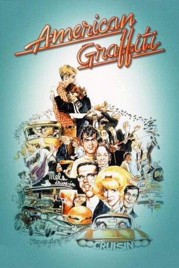
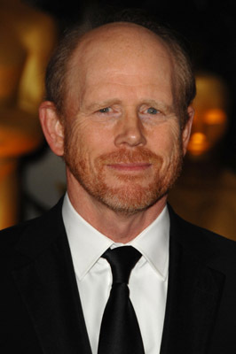
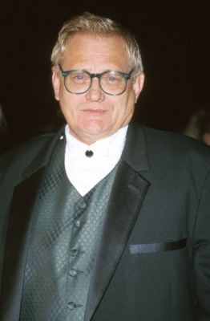
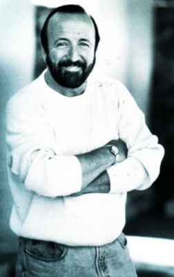
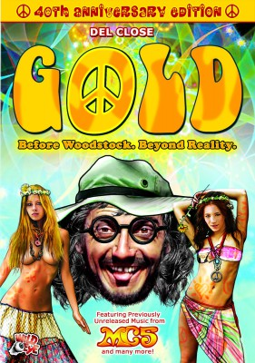

#2144 American Graffiti
Auszeichnungen: für 5 Oscars nominiert 2 GoldenGlobes gewonnen
 
 IMDB-Wertung: 7.5 / 10
IMDB-Wertung: 7.5 / 10  Metascore: 97
Metascore: 97 
Die Kleinstadt Modesto ist nicht der Ort, an dem die Post abgeht. Manche der Jugendlichen haben die Chance, das Kaff zu verlassen, andere werden auf ewig dableiben. Die beiden Schüler Steve (Ron Howard) und Curt (Richard Dreyfuss) sind im Begriff, Modesto hinter sich zu lassen, weil sie auf College gehen werden. An ihrem letzten Abend treffen sie sich noch einmal mit ihren Freunden Terry (Charles Martin Smith) und John (Paul Le Mat), bevor für alle der ernst des Lebens beginnt. Während Steve und Curt angesichts des bevorstehenden Abschieds zwischen Freude und Trauer hin- und hergerissen durch Modesto ziehen, bereitet sich John auf ein Autorennen mit Bob Falfa (Harrison Ford) vor. Zwischen Tanzveranstaltungen, Zukunftsängsten oder auch -wünschen, der Suche nach einer mysteriösen, schönen Frau und der Erkenntnis, dass sich das Leben nun ändern wird, entwickelt sich ein Panorama heranwachsender Kleinstadtjugendlicher.
Jahr: 1973
Dauer: 110 Minuten
FSK: 16
Land: USA Studio: Universal PicturesTonspuren:
Untertitel: Deutsch,
Auflösung: 720p (1280x544) Größe: 4474 MB
Genre: Komödie, Drama
Regisseur:  George Lucas
George Lucas
Drehbuch: George Lucas, Gloria Katz, Willard Huyck
Soundtrack:
Darsteller:
 Richard Dreyfuss als Curt
Richard Dreyfuss als Curt-  Ron Howard als Steve
- Paul Le Mat als John
 Charles Martin Smith als Terry
Charles Martin Smith als Terry- Cindy Williams als Laurie
 Candy Clark als Debbie
Candy Clark als Debbie- Mackenzie Phillips als Carol
- Wolfman Jack als Disc Jockey
-  Bo Hopkins als Joe
- Manuel Padilla Jr. als Carlos
 Harrison Ford als Bob Falfa
Harrison Ford als Bob Falfa Lynne Marie Stewart als Bobbie
Lynne Marie Stewart als Bobbie-  Terence McGovern als Mr. Wolfe
 Kathleen Quinlan als Peg
Kathleen Quinlan als Peg-  Del Close als Man at Bar
- Susan Richardson als Judy
- Kay Lenz als Jane
 Joe Spano als Vic
Joe Spano als Vic- Debralee Scott als Falfa's Girl
- Suzanne Somers als Blonde in T-Bird
- Beau Gentry als Ants
- Jim Bohan als Holstein
- Jana Bellan als Budda
- Deby Celiz als Wendy
- Timothy F. Crowley als Eddie
- Scott Beach als Mr. Gordon
- John Brent als Car Salesman
- Gordon Analla als Bozo
- John Bracci als Station Attendant
- Jody Carlson als Girl in Studebaker
- Chuck Dorsett als Man at Accident
- Stephen Knox als Kid at Accident
- Joe Miksak als Man at Liquor Store
- George Meyer als Bum at Liquor Store
- James Cranna als Thief
- Johnny Weissmuller Jr. als Badass #1
- William Niven als Clerk at Liquor Store
- Al Nalbandian als Hank
- Bob Pasaak als Dale
- Christopher Pray als Al
- Fred Ross als Ferber
- Jan Dunn als Old Woman
- Charlie Murphy als Old Man
- Ed Greenberg als Kip
- Lisa Herman als Girl in Dodge
- Mark Anger als Mr. Kroot
- Caprice Schmidt als Announcer at Dance
- Ron Vincent als Jeff
- Donna Wehr als Carhop
- Cam Whitman als Balloon Girl
Datei: X:\1973\American Graffiti (1973, FSK16, 1280x544).mkv seit 08.10.2015
Festplatte: HD 1971-1979
 Es gibt insgesamt 30 Filme in der Gruppe '1973'
Es gibt insgesamt 30 Filme in der Gruppe '1973'